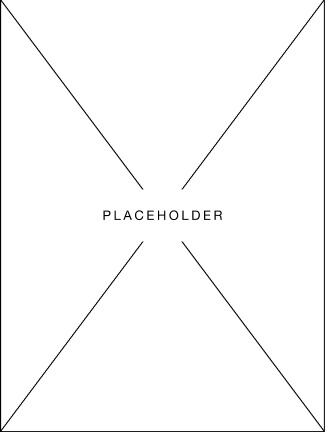

Did you Know?
Cusco, a vibrant city in Peru, has experienced consistent population growth in recent years, reflecting its appeal and ongoing development. According to available data, the population of Cusco has been steadily increasing, with recorded figures of approximately 480,000 residents in 2021, around 489,000 residents in 2022, and an estimated population of 497,000 residents in 2023. These numbers indicate positive growth rates of 1.91% and 1.64% for 2022 and 2023, respectively.
This steady population growth showcases Cusco's attractiveness as a place to live, work, and visit. The city's economic opportunities, cultural attractions, and its proximity to renowned landmarks like Machu Picchu contribute to its increasing population. As more people choose Cusco as their home or travel destination, the city continues to evolve and develop, offering a vibrant and diverse community for residents and visitors alike.
While these figures demonstrate a positive trend in population growth, it is important to note that growth rates can fluctuate over time. Therefore, to obtain the most accurate and up-to-date information, it is advisable to consult official sources or recent studies on Cusco's population dynamics. Nonetheless, Cusco's consistent growth suggests a thriving city that continues to attract individuals from various backgrounds, contributing to its cultural richness and ongoing development.
Catedral of Cusco: Delving into the Rich Architectural Splendor
The Cathedral of Cusco or Cathedral Basilica of the Virgin of the Assumption is the main temple of the city of Cusco, in Peru and houses the headquarters of the Archdiocese of Cusco. The Cathedral Basilica of Cusco, together with the Triunfo temple make up the Cathedral Complex, it is located in the northeast sector of the current Plaza de Armas of Cusco. In the place that, during the Inca period, was occupied by both the Suntor Wassi (lit. "Government House") and the Kisoarkancha or Palace of the eighth Inca Viracocha. The complex occupies an area of 3,920 square meters and is the most important religious monument in the Historic Center of Cusco.
Moray: Unveiling the Enigmatic Inca Agricultural Terraces
Moray (Quechua: Muray) is an archaeological site in Peru approximately 50 kilometres (31 mi) northwest of Cuzco on a high plateau at about 3,500 metres (11,500 ft) and just west of the village of Maras. The site contains Inca ruins, mostly consisting of several terraced circular depressions, the largest of which is approximately 30 m (98 ft) deep. As with many other Inca sites, it also has an irrigation system.
The purpose of these depressions is uncertain, but their depth, design, and orientation with respect to wind and sun creates a temperature difference of as much as 5 °C (9 °F) between the top and the bottom.
Sacsayhuaman: Delving into the Majestic Inca Fortress in Cusco
Sacsayhuamán, often spelled Saqsaywaman or Xacxaguaman, (possibly from Quechua language, waman falcon or variable hawk), is a citadel on the northern outskirts of the city of Cusco, Peru, the historic capital of the Inca Empire. The site is at an altitude of 3,701 m (12,142 ft).
The complex was built by the Incas in the 15th century, particularly under Sapa Inca Pachacuti and his successors. Dry stone walls constructed of huge stones were built on the site, with the workers carefully cutting the boulders to fit them together tightly without mortar.
In 1983, Cusco and Sacsayhuamán together were designated as sites on the UNESCO World Heritage List, for international recognition and protection. The site is now constantly explored by tourists
Vinicunca: Unveiling the Vibrant Hues of Rainbow Mountain
Vinicunca, or Winikunka, also called Montaña de Siete Colores (literally: Mountain of seven colors), Montaña de Colores (Mountain of colors) or Montaña Arcoíris (Rainbow Mountain), is a mountain in the Andes of Peru with an altitude of 5,200 metres (17,100 ft) above sea level. It is located on the road to the Ausangate mountain, in the Cusco region, between Cusipata District, province of Quispicanchi, and Pitumarca District, province of Canchis.
Tourist access requires a two-hour drive from Cusco and a walk of about 5 kilometers (3.1 mi), or a three-and-a-half-hour drive through Pitumarca and a one-half-kilometre (0.31 mi) steep walk (1–1.5 hours) to the hill. As of 2019, no robust methods of transportation to Vinicunca have been developed to accommodate travelers, as it requires passage through a valley.